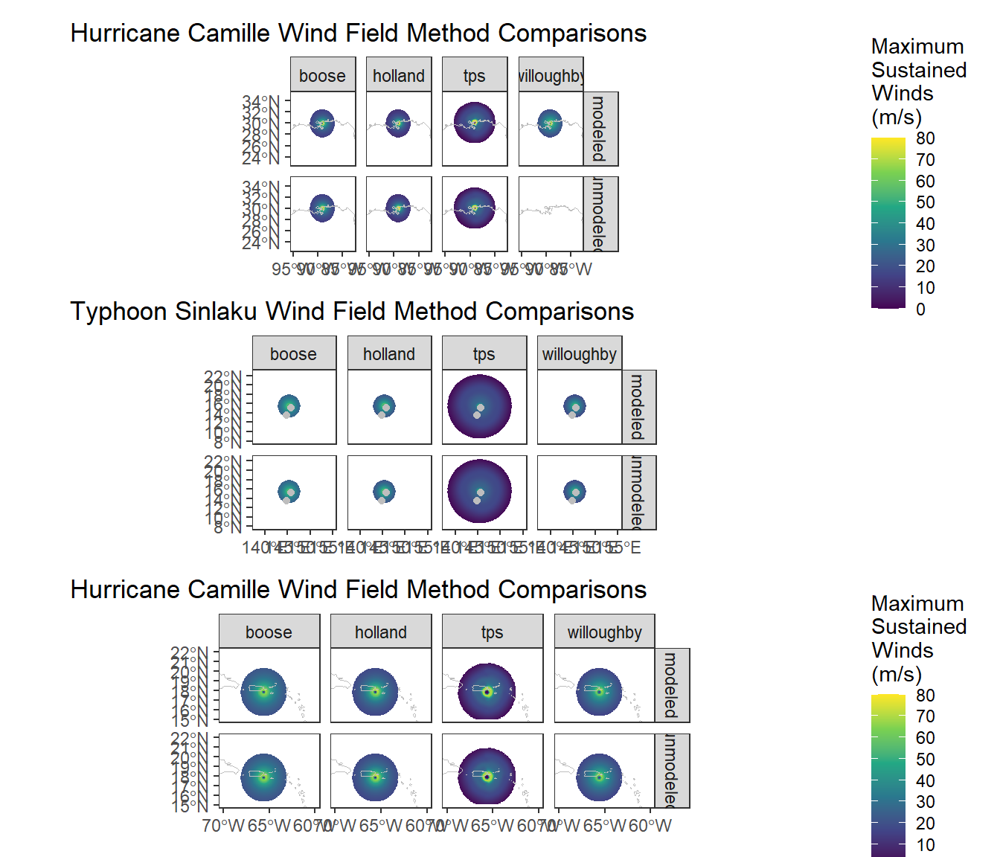

Winds
The following methods demonstrate some of the more detailed capabilities of the wind products from Cyclones. This includes: ** Modeling wind extents for storms with incomplete data ** Building high resolution wind rasters at specific timesteps ** Compare rasters with hurricane hunter reconnaissance drop sonde data
Get Storm Tabular Data
Use the ‘get_storms()’ function to gather the available time series, location, and meteorological information for a particular storm. If a local, pre-downloaded IBTrACS .csv or .nc data source is available, it can be used, either as the file location or as a pre-loaded dataset. If not, the data will be downloaded from the web.
library(Cyclones)
## reading from a local copy
allstorms <- get_storms("./ibtracs.ALL.list.v04r01.csv")
## downloading instead, will need to increase download timeout option
# options(timeout = 400)
# allstorms <- get_storms(ib_filt="all")
## separate the storms of interest for this vignette
storms <- allstorms[grep("CAMILLE_1969|SINLAKU_2026|MARIA_2017",names(allstorms))]Get Wind Products
With the tabular data loaded, they can now be used to build wind rasters.
Build Extent Models
If linear extents of wind speeds and cyclone regions (eye, radius of last closed isobar (ROCI)) are needed, or if the Thin Plate Spline (TPS) wind method is desired, wind extent models are built into a lookup table (The empirical TPS method is shown below to be more accurate than the theoretical models). These lookup tables should be based on as full or limited a set of storms as necessary for the objective. For generalized modeling, its best to use a full set of storms (ib_filt=“all” in the above get_storms() call).
## build the models based on the entire storm dataset.
## The models are built into lookup tables,
## with a different model for every quadrant of the storm,
## for every storm size and in every basin.
mods <- build_models(allstorms)Make Wind Extent Spatial Features
The above models will allow the reconstruction of certain wind and pressure extents when missing, which is often the case for older (pre 2018) storms. These are particularly useful when using the Thin Plate Spline method for wind modelling, as it allows for the creation of wind field predictions specific to each quadrant and each basin and each storm category based on the other storms in the data. If generalized, mostly symmetrical wind fields are desired, the other non-TPS methods can be used as explained further below. However those often use the radius of maximum wind (RMW), which is also often missing in older storms and can be estimated using the models from ‘build_models()’.
## generate linestring (default) and polygon (optionally) wind extent features
## for each timestep
## in each storm. When used as shown below with multiple storms as an input,
## the functions will only perform the action on the first storm
windextents <- make_extents(storms,mods=mods,type=c("linestrings","polygons"))
## which is equivalent to
windextent_1 <- make_extents(storms[[1]],mods=mods,type=c("linestrings",
"polygons"))
## To apply the function to all storms, use lapply or a parallel equivalent
## (snowfall::sfLapply)
## Can also decrease the timestep from the 3-hour default, which will
## interpolate positions and meteorological data. Native, interpolated, and
## modeled data are indicated in the final product
windextents <- lapply(storms,make_extents, mods=mods,t_res=30)
## To perform internal parallelization (over individual timesteps), include the
## cpus argument
## note:: this is probably only really beneficial for very high resolution
## timesteps
windextents <- lapply(storms,make_extents, mods=mods,t_res=15,cpus=10)
## parallel over multiple storms
library(snowfall)
sfInit(parallel=TRUE, cpus=3)
sfLibrary(sf)
sfLibrary(terra)
sfLibrary(dplyr)
sfLibrary(Cyclones)
windextents <- sfLapply(storms,make_extents, mods=mods,t_res=30)
## be sure to close parallel workers
sfStop()
## If both linestrings and polygons were returned, they can be pulled out
linestrings <- lapply(windextents,function(x) x$linestrings)
polygons <- lapply(windextents,function(x) x$swaths)
## the individual storms are projected in their own crs, centered on the storm.
## To get them all in the same CRS, if desired
linestrings <- lapply(linestrings,st_transform,crs=4326)These spatial features can also be good for certain storm visualizations in which a fully gridded raster is unnecessary or otherwise unfit for the display objectives. In the below figure, the top panel shows the various extents for thr native timesteps only of our two storms. The lower figure better demonstrates the difference between the native and modeled data, with the older Camille generally lacking any native data when compared to the more recent Sinlaku. Still, Sinlaku native data is missing some of the lower wind extents that would normally be included in a modern North Atlantic storm.

Fig 1. The results of make_extents() are storm tracks, as well as outer limits of various wind and pressure values. Here, only the native timesteps are shown, with a mix of native and modeled extents.
![Fig 2. Another look at the results of make_extents(), this time looking at the different sources of the data and only for hurricane force winds. If t_res was utilized, interpolated features are also created to fill in the missing times. Also, the 'mods' argument can be used to model wind and pressure values that are missing, which is usually the case for older storms or sometimes for storms outside of USA jurisdiction. In this case, an older storm (Camille) has very little native information. Because we used modeling to fill in the missing extents, there are a mix of native and modeled features, as well as interpolated features between the native time steps.](Winds_files/figure-html/plot-extents2-1.png)
Fig 2. Another look at the results of make_extents(), this time looking at the different sources of the data and only for hurricane force winds. If t_res was utilized, interpolated features are also created to fill in the missing times. Also, the ‘mods’ argument can be used to model wind and pressure values that are missing, which is usually the case for older storms or sometimes for storms outside of USA jurisdiction. In this case, an older storm (Camille) has very little native information. Because we used modeling to fill in the missing extents, there are a mix of native and modeled features, as well as interpolated features between the native time steps.
Build Wind Rasters
Next, we interpolate and/or model the winds across space and time, creating a more complete gridded representation that can be useful in any number of applications. This is accomplished through either one of three theoretical models, or through a more empirical Thin Plate Spline, which utilizes the above linestrings, and which in this case were generated from a set of models. Because we used models here, all methods should produce a set of rasters, in contrast to the simple method employed in the introductory vignette, which did not use models and as a result could not produce all methods for the older Camille storm.
The ‘make_winds’ function accepts a spatial resolution specification and will match the temporal resolution of the input wind extents. Although accuracy and smoothness are optimized at higher resolutions, computation times suffer. For initial testing, a spatial resolution of 20000 m and a temporal resolution of 60 mins is reasonable and default. Because terra::raster objects are saved on disc rather than memory, they can not be passed and collected as part of parallel processes. Therefore, results from get_wind and other functions are wrapped rasters in case a parallel operation is desired. They must be separated and unwrapped with a simple ‘unwrap()’ call before they can be used for most operations. All storm layers are projected onto a Lambert Azimuthal Equal Area reference system that is centered on the storm’s extent, which preserves area across large geographic regions and avoids geographic coordinate issues at the 180th meridian.
## use get_wind() to produce the wind rasters
winds <- lapply(windextents,get_wind,methods=c("all"))
names(winds)
## load files saved to disk previously, providing the directory names as saved
## in this case, if files were saved other than the working directory, provide
## that as the 'todir' argument
winds <- lapply(list(CAMILLE1969="CAMILLE1969_20000_30",SINLAKU2026="SINLAKU2026_20000_30",MARIA2017="MARIA2017_20000_30"),
todir="./Winds",get_wind)
## the layers are stored in nested lists in which individual time steps are
## nested within each storm and each method
windsCamille_tps <- winds$CAMILLE_1969_NA_1969226N18280$tps
plot(windsCamille_tps[[1:3]])
## compute only one storm at a time, utilizing internal parallel
## only optimal for higher spatial resolutions (<10km)
winds <- get_wind(windextents$CAMILLE_1969_NA_1969226N18280,methods=c("all"),
s_res=5000,cpus=15,todir="./")
####################
# parallel across multiple storms via snowfall
# best for low to medium resolution for multiple storms
####################
library(snowfall)
sfInit(parallel=TRUE, cpus=2)
## WARNING: Do not overdo the number of CPUs. Verify your machine's capacity
## beforehand.
## the parallel cpus will each do one storm, so no point in giving it more cpus
## than there are storms to process, unless there are more storms than
## available cpus
sfLibrary(sf)
sfLibrary(terra)
sfLibrary(dplyr)
sfLibrary(fields) # for the TPS models
sfLibrary(geosphere) # for the bearing function
sfLibrary(Cyclones)# for the current library
#sfLibrary(snowfall) # to be able to write to log file
winds <- sfLapply(windextents,Cyclones:::get_wind,methods="all",s_res=10000,
t_res=60,parallel=TRUE)
sfStop()
## unwrap
winds <- lapply(winds, function(x) lapply(x,unwrap))
Fig 2. The results of get_wind() are rasters for each timestep at the desired spatial resolution (here at 5000km). This is showing windspeed, but wind direction and power disspipation are also provided. Because we modeled the wind extents before computing the wind rasters, all methods can be used. See further below a comparison of the modeled versus non modeled results.
In the introductory vignette, the same wind rasters were produced based on wind extents that were not modeled. While they maintain the uncertainty of the native data, these un-modeled extents are unable to provide much of the information necessary for TPS calculation, and in the case that they do have all of the necessary information, it is sometimes misleading. The below figure demonstrates the difference between wind rasters produced from modeled and un-modeled wind extents. For Camille, modelling allows for the computation of the other methods, which require a radius of maximum wind and an outer pressure estimate at the least. For Sinlaku, modelling helps constrain the maximum wind field.

Fig 3. The results of get_wind() for Sinlaku, 2026 using only the native wind extents (un-modeled) as well as those from windextents that were supplemented with modeling. The un-modeled TPS extents do not properly bound the eye, resulting in an inflated maximum wind area. Non-TPS methods that weren’t able to compute for Camille, did so with modeled extents.

Fig 4. Rasters from get_wind() along with the wind extents from make_extents(). The wind extents are directly used to calculate the TPS method, but they also offer an interesting comparison with the other methods. The non-TPS methods were primarily developed for North Atlantic cyclones, which are generally half the size of Pacific cyclones, which can be seen here as the non-tps methods drastically underestimate storm size compared to TPS.
Compare Winds With Any Corresponding Drop Sondes
The compare_winds function will compare the computed raster data with drop sonde data from the National Hurricane Center, if available. Drop sondes are acquired from NOAA’s Hurricane Research Division. They are high accuracy gps beacons, whose trajectory and sensors provide high frequency wind information (i.e. velocity, direction). Data are available for select storms dating back to 1960. If available, data is ingested, parsed, aggregated, and saved to either a temp drive or a permanent repository, which makes processing more stable if the same storms will be reanalyzed in the future (no need to download). Once the sonde data is ready, they are cross referenced with the wind rasters and matched by location (accuracy dependent on raster resolution) and time (within 5 minutes default). Because of this, a higher temporal resolution for the rasters will result in more matches with the sonde data. Further, although drop sondes collect information along the entire vertical profile of the storm, only surface winds (<30 m in elevation) are compared here, as those are most comparable to the raster layers.
The compare_winds function will output a list of spatial feature data frames in a geographic coordinate system, with each entry corresponding to one set of sonde measurements and the corresponding extracted raster value. It can be used to assess and examine the accuracy of the wind products as they related to direct measurements from the sondes.
## The wind rasters (as filenames or loaded into memory) can be compared
## against the hurricane hunter drop sonde data
## indicating the ddir will save and load the sonde data from that directory
comps <- compare_winds(rasts=windsSinlaku,ddir="./Drop Sondes/")
comps_r <- do.call(rbind,comps)
### get the value closest to the ground for each sonde in each storm
comps_r_filt <- comps_r |> group_by(sonde, storm, method,var) |>
filter(ZW.m==min(ZW.m,na.rm=TRUE)) |>
ungroup()![Fig 5. get_wind() raster products compared with drop sonde data from hurricane hunter aircraft reconnaissance missions. Sondes are dropped from high elevation and take continuous measurements as they fall to the ground. The below data represent measurements that were taken within 5 minutes of the raster times and at the maximum height below 30 meters. Generally, raster images accurately reflect the dropsonde data, although there are some major discrepencies, mostly from sondes that are near or on the eye wall where wind speeds change rapidy across the profile.](Winds_files/figure-html/compare_winds-1.png)
Fig 5. get_wind() raster products compared with drop sonde data from hurricane hunter aircraft reconnaissance missions. Sondes are dropped from high elevation and take continuous measurements as they fall to the ground. The below data represent measurements that were taken within 5 minutes of the raster times and at the maximum height below 30 meters. Generally, raster images accurately reflect the dropsonde data, although there are some major discrepencies, mostly from sondes that are near or on the eye wall where wind speeds change rapidy across the profile.
The above graphic represents the drop sonde comparisons for the raster products of about 40 storms since 2016, each at 5 km spatial resolution and 10 min temporal resolution. Although each storm will be different, overall the TPS method outperforms the other models in terms of the root mean square error (RMSE). Most of the error for all methods stems from sonde locations in the eye-wall, where wind dynamics can change drastically over relatively small distances. Future comparison will also incoporate SAR wind measurements.
![Fig 5. get_wind() raster products compared with drop sonde data from hurricane hunter aircraft reconnaissance missions. Sondes are dropped from high elevation and take continuous measurements as they fall to the ground. The below data represent measurements that were taken within 5 minutes of the raster times and at the maximum height below 30 meters. Generally, raster images accurately reflect the dropsonde data, although there are some major discrepencies, mostly from sondes that are near or on the eye wall where wind speeds change rapidy across the profile.](Winds_files/figure-html/compare_winds2-1.png)
Fig 5. get_wind() raster products compared with drop sonde data from hurricane hunter aircraft reconnaissance missions. Sondes are dropped from high elevation and take continuous measurements as they fall to the ground. The below data represent measurements that were taken within 5 minutes of the raster times and at the maximum height below 30 meters. Generally, raster images accurately reflect the dropsonde data, although there are some major discrepencies, mostly from sondes that are near or on the eye wall where wind speeds change rapidy across the profile.